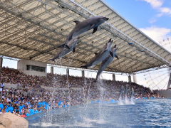
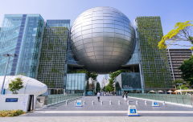
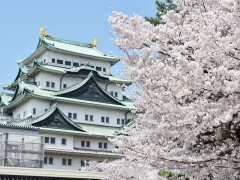

名古屋の観光地TOP３
※このランキングは作成者の独断と偏見で決めています。あらかじめご了承ください。
-

- 第１位 名古屋港水族館
- 名古屋港水族館は世界最大級の都市型水族館です． イルカパフォーマンスとシャチの公開トレーニングが行われている「メインプール」を始め，4種類のペンギンが飼育されている「南極の海」など，水中で暮らす多くの生き物を観ることができます．
詳細を表示
営業時間 9:30~17:30 休館日 月曜日（休日の場合は翌日）
年末年始（12月28日～1月4日）入館料 大人・高校生：2,000円
小・中学生：1,000円
幼児（４歳以上）：500円アクセス 地下鉄名港線「名古屋港駅」
3番出口より徒歩5分アクセスマップ 公式HP //nagoyaaqua.jp/ -

- 第２位 名古屋市科学館
- 名古屋市科学館は国内最大級のプラネタリウムを有する科学館です．天文館、理工館、生命館という3館で構成されています．
- エントランスがあり最初に入る施設です． 2階から6階までが常設展示室、地下に特別展示等を開催するイベントホール、7階に天文台、3階と7階に休憩室があります． 常設展示室では、こどもたちの科学的な気づきを促す展示から、最先端科学を扱った展示があり、 分野も科学技術全般に幅広く取り扱われています． 通常の展示品の他、2階層の吹き抜けを用いた大型展示品もあります．
- 主に球体の施設部分であり、4階から6階までのフロアで構成されています． 4階は実演を行うステージ、5階は常設展示室、6階にプラネタリウムがあります． プラネタリウムでは、幼児を含む幅広い年齢層を対象に、単に憧れとしての星空を眺めるだけではなく、 天文知識や現象を正確に伝え、さらに、本当の星空にまで興味が広がるような、番組構成・解説が行われています．
- 2階から5階までが常設展示室、6階に講座を開催する実験室や学習室、1階に休憩室、地下2階に「あいち・なごやノーベル賞受賞者記念室」が設置されたサイエンスホールがあります． 常設展示室では、生命とは何かをあらゆる角度から総合的に解明しようとする生命科学をテーマに、「生命」「人体」「生活」及び「地球」のグループを設定し、この地球という惑星の上で、人類が豊かで健康な暮らしをするための問いかけがされています．
理工館
天文館
生命館
詳細を表示
営業時間 9:30～17:00（入館は16:30まで） 休館日 月曜日（休日の場合は翌日）
第３金曜日（休日の場合は第４金曜日）
年末年始入館料(展示室とプラネタリウム) 大人：800円
高校生・大学生：500円 ※要学生証
中学生以下：無料入館料(展示室のみ) 大人：400円
高校生・大学生：200円 ※要学生証
中学生以下：無料アクセス 地下鉄東山線・鶴舞線「伏見駅」
4・5番出口より徒歩5分アクセスマップ 公式HP //www.ncsm.city.nagoya.jp/ -

- 第３位 名古屋城
- 名古屋城は約500年の歴史を有し，徳川家康が豊臣方の大名らに命じて、いわゆる公儀普請で築いた城です． 2023年7月現在，天守閣は設備の老朽化や耐震性の確保などの問題に対応するために閉館していますが， 2018年に復元された本丸御殿など多くの見どころがあります．
詳細を表示
営業時間 9:00～16:30
（本丸御殿の入場は16:00まで）休園日 12/29~12/31,1/1 観覧料 大人(高校生以上)：500円
中学生以下：無料アクセス 地下鉄名城線「名古屋城駅」
7番出口より徒歩5分アクセスマップ 公式HP //www.nagoyajo.city.nagoya.jp/